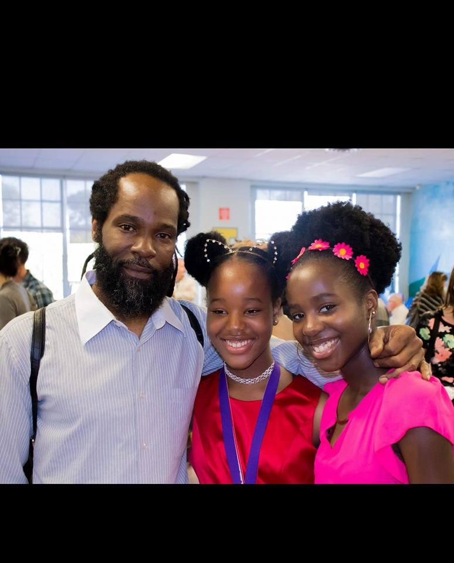
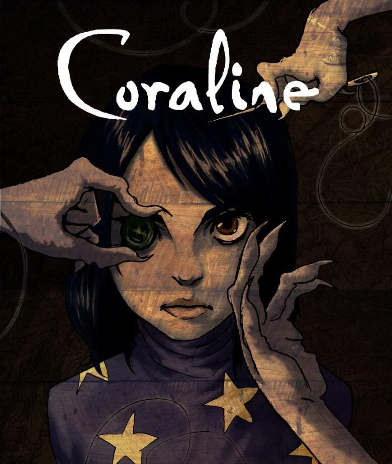
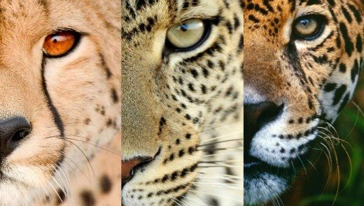
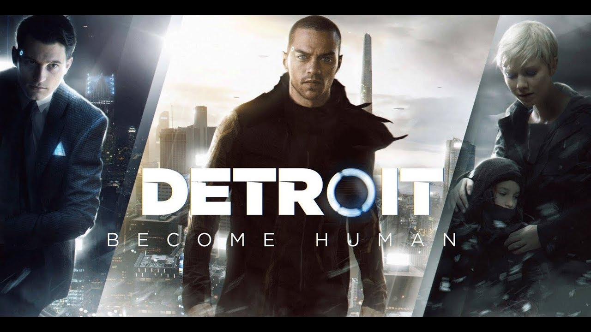

I'm not very interesting to be honest. I live with my family in Toronto, Ontario. I've only been on a plane twice in my entire life and it was to go to the same place. I'm one of the very few in my family to have an introverted personality. I can speak french (I'm not fluent but not a beginner either). I have very few hobbies. They are drawing, painting and writing. I do intend on trying sewing and animation sometime in the future but as of now, it just those three.
My friends call me strange or odd because of my ability to remember the most random thing about another person but not their name or hair colour. They also call me weird or creepy because of my dark and sometimes confusing humor. My favorite colours are red and purple but I despise megenta. My favorite flowes are roses and buttercups.
Here are a few things that I really love.
*Animation. The idea of creating the illusion of movement with drawings is really amazing to me. A few of my favorites are Coraline, A Silent Voice, Howl's Moving Castle and Wolf Children.
*Wildcats. They're just really pretty. Leopards, Cheetahs and Jaguars are the best!
*Butterfly effect/choose your own adventure video games. Mainly Life is strange, Detroit: Become Human and Until Dawn.
*My family. Of course.
  Syke! I'm a loner without any connections.